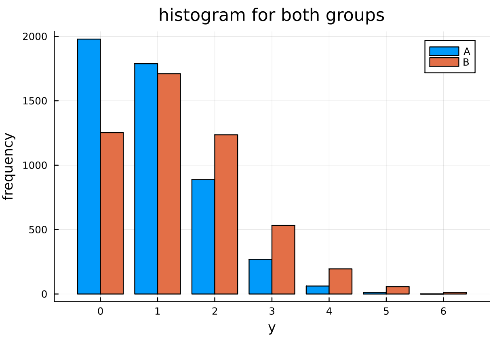
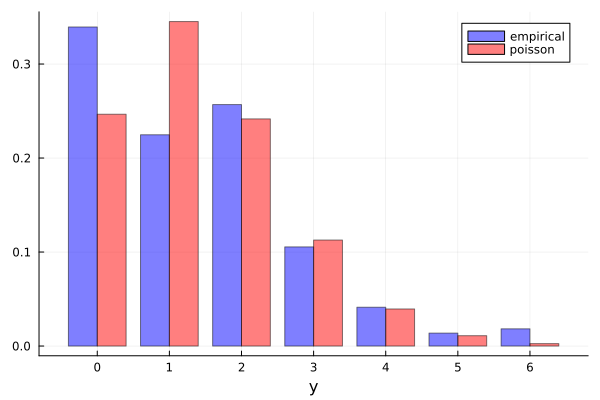
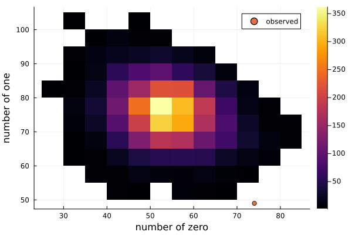

Exercise 4.8 Solution - Hoff, A First Course in Bayesian Statistical Methods
標準ベイズ統計学 演習問題 4.8 解答例
a)
answer
menchild_bach = [] open("../../Exercises/menchild30bach.dat") do file for line in eachline(file) append!(menchild_bach, parse.(Int, split(line))) end end menchild_nobach = [] open("../../Exercises/menchild30nobach.dat") do file for line in eachline(file) append!(menchild_nobach, parse.(Int, split(line))) end end # data sy_A = sum(menchild_bach) n_A = length(menchild_bach) sy_B = sum(menchild_nobach) n_B = length(menchild_nobach) # prior parameters a₀ = 2 b₀ = 1 # Posterior distributions dist_θ_A = Gamma(a₀ + sy_A, 1/(b₀ + n_A)) dist_θ_B = Gamma(a₀ + sy_B, 1/(b₀ + n_B)) # Monte Carlo samples θ_A_mc = rand(dist_θ_A, 5000) θ_B_mc = rand(dist_θ_B, 5000) y_A_mc = rand.(Poisson.(θ_A_mc)) y_B_mc = rand.(Poisson.(θ_B_mc))

b)
answer
for \(\theta_B - \theta_A\):
quantile(θ_B_mc .- θ_A_mc, [0.025, 0.975])
2-element Vector{Float64}:
0.14453032216400238
0.7359150252471184
for \(\hat{Y}_B - \hat{Y}_A\):
quantile(y_B_mc .- y_A_mc, [0.025, 0.975])
2-element Vector{Float64}:
-2.0
4.0
c)
answer
(a₀ + sy_B) / (b₀ + n_B)
1.4018264840182648
\(\hat{\theta} = 1.4 \)はほぼ\(\theta_B\)の事後平均。

モデルはデータに比べて、子供の数が 1 人の人の割合が多く、0人と 2 人の割合が少ない。 Poisson モデルは峰が２つあるような分布を表現できないので、もし母集団の分布が上の empirical distribution のように、0と 2 の２点でピークを持つような分布であれば、Poisson モデルは適切ではないと考えられる。
Compared to the data, the model shows a higher proportion of individuals with 1 child and lower proportions for those with 0 and 2 children.
The Poisson model cannot represent a distribution with two peaks.
Therefore, if the underlying population distribution indeed has peaks at 0 and 2 as suggested by the empirical distribution above, the Poisson model would be considered inappropriate.
d)
answer
obs_zero = sum(menchild_nobach .== 0) obs_one = sum(menchild_nobach .== 1) num_zero = [] num_one = [] for θ in θ_B_mc y_mc = rand(Poisson(θ), n_B) push!(num_zero, sum(y_mc .== 0)) push!(num_one, sum(y_mc .== 1)) end

上図より、Poisson モデルが母集団の真の分布であると仮定すると、今回の標本が観測される可能性は極めて低いことがわかる。よって、Poisson モデルは適切ではないと考えられる。
From the figure above, assuming the Poisson model is the true distribution of the population, we can see that the probability of observing the current sample is extremely low.
Therefore, the Poisson model is considered inappropriate.